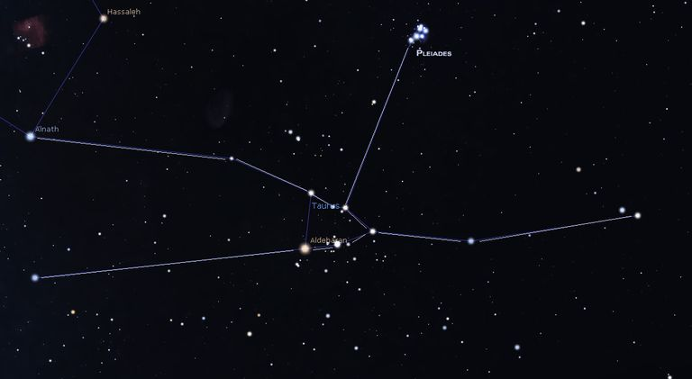

Taurus Constellation
Taurus constellation lies in the northern sky. Its name means “bull” in Latin. The constellation is symbolized by the bull’s head, ♉. Taurus is one of the 12 constellations of the zodiac, first catalogued by the Greek astronomer Ptolemy in the 2nd century. The constellation’s history, however, dates back to the Bronze Age. Taurus is a large constellation and one of the oldest ones known. In Greek mythology, the constellation is associated with Zeus, who transformed himself into a bull in order to get close to Europa and abduct her. Taurus is known for its bright stars Aldebaran, El Nath, and Alcyone, as well as for the variable star T Tauri. The constellation is probably best known for the Pleiades (Messier 45), also known as the Seven Sisters, and the Hyades, which are the two nearest open star clusters to Earth. Taurus also has a number of famous deep sky objects, among them the supernova remnant Messier 1 (the Crab Nebula), Hind’s Variable Nebula (NGC 1555), the colliding galaxies NGC 1410 and NGC 1409, the Crystal Ball Nebula (NGC 1514), and the Merope Nebula (NGC 1435).

MYTHOLOGY
Taurus constellation has been known since at least the Early Bronze Age, when it marked the Sun’s location during the spring equinox. It has been associated with the bull in many cultures and mythologies: Greek and Egyptian among other, and even going back to Ancient Babylon. Depictions of Taurus and the Pleiades star cluster have even been found in a cave painting at Lascaux, dating back to 15,000 BC. Both the constellation and the Pleiades have been known in many indigenous cultures and referred to as the bull and the seven sisters, which indicates a common origin for the names. In Greek mythology, Taurus is usually associated with Zeus, who adopted the shape of a bull in order to seduce and abduct Europa, the beautiful daughter of the Phoenician King Agenor. Zeus mingled with the king’s herd and, being the most handsome bull there, he got Europa’s attention. The princess admired the bull and, when she sat on his back, he rose and headed for the sea. Zeus carried Europa all the way to the island of Crete, where he revealed his true identity and lavished the princess with presents. The two had three sons together, including Minos, who grew up to be the famous king of Crete, who built the palace at Knossos where bull games were held and who also sacrificed seven young boys and girls to the Minotaur each year. Zeus later commemorated the bull by placing it among the stars.
An alternative interpretation associates Taurus with the nymph Io, whose line Europa was descended from, who was also seduced by Zeus and then transformed into a heifer when the two were nearly caught by Hera. Babylonian astronomers called the constellation MUL.APIN, or “The Heavenly Bull.” In the Epic of Gilgamesh, one of the earliest literary works from Mesopotamia, Gilgamesh faces the Bull of Heaven sent by the goddess Ishtar to kill the hero after he had rejected her advances. Gilgamesh is sometimes associated with the nearby Orion, another ancient constellation, and the two constellations are depicted as Gilgamesh and the bull in combat.
FACTS
Taurus is the 17th largest constellation in the sky, occupying an area of 797 square degrees. It is located in the first quadrant of the northern hemisphere (NQ1) and can be seen at latitudes between +90° and -65°. The neighboring constellations are Aries, Auriga, Cetus, Eridanus, Gemini, Orion and Perseus. Taurus belongs to the zodiac family of constellations, along with Aries, Gemini, Cancer, Leo, Virgo, Libra, Scorpius, Sagittarius, Capricornus and Pisces. Taurus contains two Messier objects – Messier 1 (M1, NGC 1952, Crab Nebula) and Messier 45 (the Pleiades) – and has five stars that may have planets in their orbits. The brightest star in the constellation is Aldebaran, Alpha Tauri, with an apparent magnitude of 0.85. Aldebaran is also the 13th brightest star in the sky. There are two meteor showers associated with the constellation; the Taurids and the Beta Taurids. The Taurids peak in November, while the Beta Taurids can be seen in June and July.